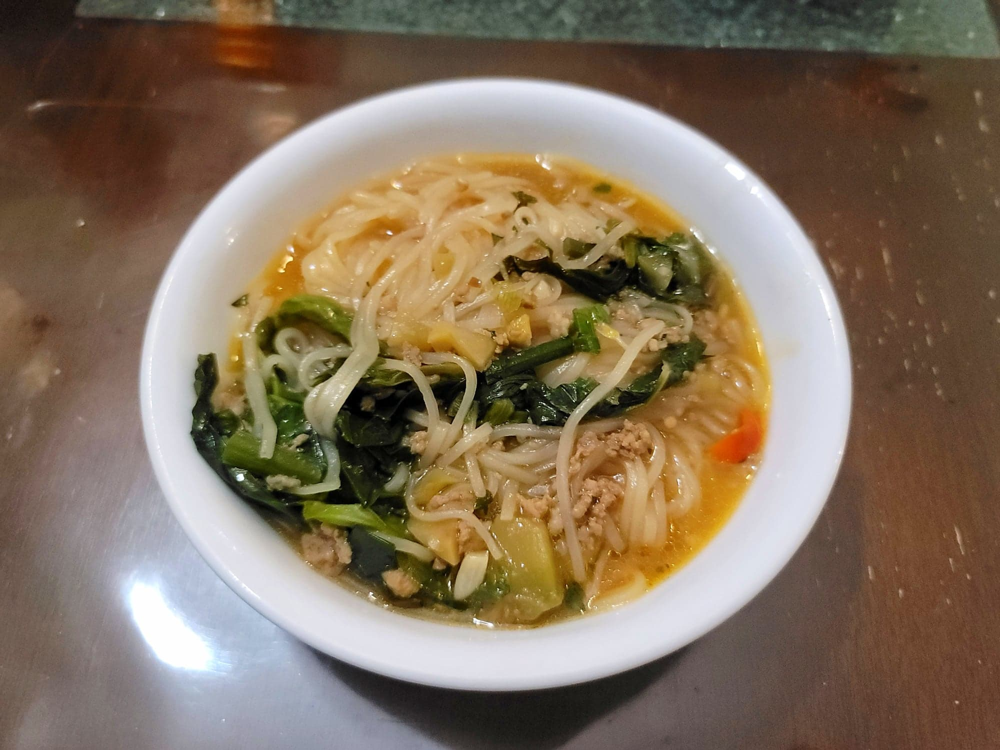

Xiǎoguō Mǐxiàn (Little Pot Rice Noodle Soup)

Ingredients:
Marinade:
- 1/2 lb Ground pork
- 2 tsp Shaoxing wine
- 1/4 tsp Dark soy sauce
- 1 tbsp Light soy sauce
- 2 tbsp Water
Xiǎoguō Mǐxiàn:
- 1 lb Fresh rice noodles or 1/2 lb prepared Dried rice noodles
- 3 tbsp Canola oil
- 2 tsp Ginger, minced
- 1 tbsp Garlic, minced
- 1-3 Dried chilies, chopped
- 6 cups Chicken stock or Chicken/pork stock
- 2 tsp Dark soy sauce
- 1/4 tsp sugar
- 100 g Bean sprouts
- 100 g Pea tips
- 50 g Garlic chives, chopped into 1 inch pieces
- Salt, to taste
- 150 g Pickled cabbage or Pickled mustard greens
- 1/4 Cilantro, chopped
- 1 Scallion
Instructions:
- Combine the marinade ingredients and massage them into the pork until completely absorbed. Let marinate in the fridge for at least one hour or overnight.
- Heat the oil in a soup pot over high heat. Add the garlic, ginger, and chilies and cook for 1 minute, or until very fragrant. Then add in the pork and stir-fry until cooked completely.
- Add in the stock, dark soy sauce, and sugar and let it come to a boil. Then add the bean sprouts, pea tips, and garlic chives and bring to a boil again. Mix in the noodles and salt to taste. Stir in the cilantro, scallions, and pickled cabbage and remove from the heat. Serve hot.